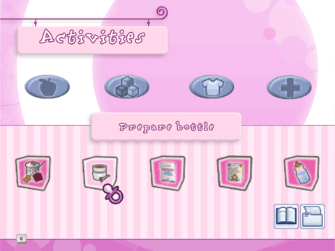

Aquí puedes elegir minijuegos para cada una de las habitaciones y ver tu inventario. También puedes acceder a tus álbumes de fotos, hacer una pausa y volver al menú principal, o guardar la partida actual.

Food (Inventario de comida)
Si necesitas algo para preparar un plato para tu bebé, aquí lo encontrarás. Los artículos de este inventario sólo pueden verse mientras estás en la cocina, donde prepararás todas las comidas de tu bebé.
Toys (Inventario de juguetes)
¡A jugar! ¡Si estás en el cuarto de juegos o el jardín, puedes entretener a tu bebé con sus juguetes favoritos!
Clothes (Inventario de ropa y muebles)
¿Has comprado ropa nueva para tu bebé? ¿Muebles para el dormitorio? Toda la ropa del bebé y muebles de dormitorio están en este inventario.
Wellness (Inventario de salud)
Tu bebé debe estar siempre limpio. Asegúrate de tener todo lo preciso para bañarlo y cambiarle el pañal. Todos los artículos de limpieza que necesitarás están en este inventario.
Álbum de fotos
Pulsando este icono accedes al álbum de fotos. Aquí puedes ver todas las fotos que has tomado de tu bebé y puedes hacer que una de ellas participe en un concurso de belleza cada mes (más información al respecto en los minijuegos). Al pulsar la papelera, borrarás la foto. Pulsa el botón B para volver al menú de interacción.
Icono del libro
Aquí puedes cambiar de idioma o salir del juego.
Icono de la carpeta
Para guardar la partida en curso, elige el icono de guardado.